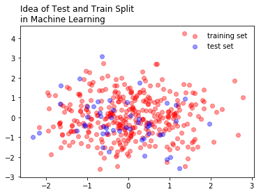
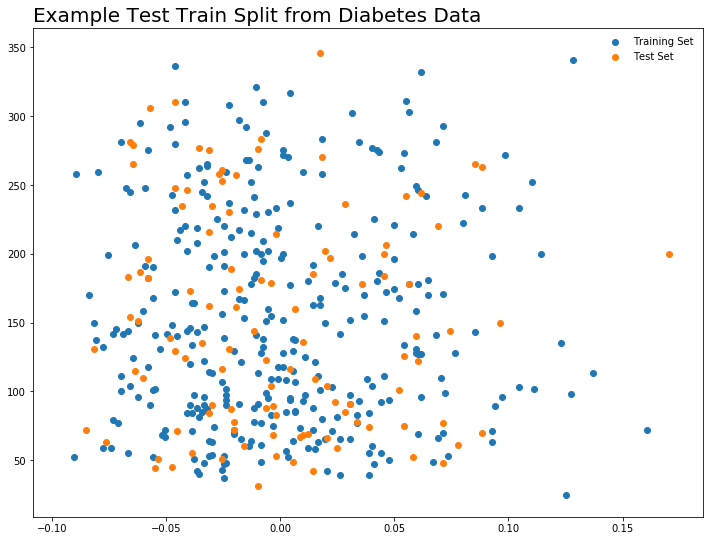

In [27]:
%matplotlib inline
import matplotlib.pyplot as plt
import numpy as np
import pandas as pd
Intro to Machine Learning¶
One of the main ideas of machine learning, is to split data into testing and training sets. These sets are used to develop the model, and subsequently test its accuracy. Later, we will repeat this process a number of times to get an even better model. Machine learning can be thought of as representing a philosophy to model building, where we improve our models by iteratively building the model and testing it’s performance on held out data.
In [31]:
x = np.random.randn(400)
y = np.random.randn(400)
In [56]:
x.shape
Out[56]:
(400,)
In [36]:
plt.scatter(x[:350], y[:350], color = 'red', alpha = 0.4, label = 'training set')
plt.scatter(x[350:], y[350:], color = 'blue', alpha = 0.4, label = 'test set')
plt.legend(loc = 'best', frameon = False)
plt.title("Idea of Test and Train Split \nin Machine Learning", loc = 'left')
Out[36]:
Text(0,1,'Idea of Test and Train Split \nin Machine Learning')

In [53]:
X_train, x_test, y_train, y_test = x[:350].reshape(-1,1), x[350:].reshape(-1,1), y[:350].reshape(-1,1), y[350:].reshape(-1,1)
In [55]:
X_train.shape
Out[55]:
(350, 1)
In [42]:
from sklearn import linear_model
In [43]:
reg = linear_model.LinearRegression()
reg.fit(X_train, y_train)
Out[43]:
LinearRegression(copy_X=True, fit_intercept=True, n_jobs=1, normalize=False)
In [44]:
reg.coef_
Out[44]:
array([[ 0.04404589]])
In [48]:
y_predict = reg.predict(x_test.reshape(-1,1))
In [52]:
plt.scatter(X_train, y_train, alpha = 0.3)
plt.scatter(x_test, y_test, alpha = 0.3)
plt.plot(x_test, y_predict, color = 'black')
Out[52]:
[<matplotlib.lines.Line2D at 0x1a1b3ec208>]

In [2]:
from sklearn import datasets
In [3]:
iris = datasets.load_iris()
digits = datasets.load_digits()
In [4]:
print(digits.data)
[[ 0. 0. 5. ..., 0. 0. 0.]
[ 0. 0. 0. ..., 10. 0. 0.]
[ 0. 0. 0. ..., 16. 9. 0.]
...,
[ 0. 0. 1. ..., 6. 0. 0.]
[ 0. 0. 2. ..., 12. 0. 0.]
[ 0. 0. 10. ..., 12. 1. 0.]]
In [5]:
digits.target
Out[5]:
array([0, 1, 2, ..., 8, 9, 8])
In [6]:
digits.images[0]
Out[6]:
array([[ 0., 0., 5., 13., 9., 1., 0., 0.],
[ 0., 0., 13., 15., 10., 15., 5., 0.],
[ 0., 3., 15., 2., 0., 11., 8., 0.],
[ 0., 4., 12., 0., 0., 8., 8., 0.],
[ 0., 5., 8., 0., 0., 9., 8., 0.],
[ 0., 4., 11., 0., 1., 12., 7., 0.],
[ 0., 2., 14., 5., 10., 12., 0., 0.],
[ 0., 0., 6., 13., 10., 0., 0., 0.]])
In [9]:
iris.data[:5]
Out[9]:
array([[ 5.1, 3.5, 1.4, 0.2],
[ 4.9, 3. , 1.4, 0.2],
[ 4.7, 3.2, 1.3, 0.2],
[ 4.6, 3.1, 1.5, 0.2],
[ 5. , 3.6, 1.4, 0.2]])
In [10]:
iris.target
Out[10]:
array([0, 0, 0, 0, 0, 0, 0, 0, 0, 0, 0, 0, 0, 0, 0, 0, 0, 0, 0, 0, 0, 0, 0,
0, 0, 0, 0, 0, 0, 0, 0, 0, 0, 0, 0, 0, 0, 0, 0, 0, 0, 0, 0, 0, 0, 0,
0, 0, 0, 0, 1, 1, 1, 1, 1, 1, 1, 1, 1, 1, 1, 1, 1, 1, 1, 1, 1, 1, 1,
1, 1, 1, 1, 1, 1, 1, 1, 1, 1, 1, 1, 1, 1, 1, 1, 1, 1, 1, 1, 1, 1, 1,
1, 1, 1, 1, 1, 1, 1, 1, 2, 2, 2, 2, 2, 2, 2, 2, 2, 2, 2, 2, 2, 2, 2,
2, 2, 2, 2, 2, 2, 2, 2, 2, 2, 2, 2, 2, 2, 2, 2, 2, 2, 2, 2, 2, 2, 2,
2, 2, 2, 2, 2, 2, 2, 2, 2, 2, 2, 2])
In [15]:
plt.subplot(1, 3, 1)
plt.imshow(digits.images[1])
plt.subplot(1, 3, 2)
plt.imshow(digits.images[2])
plt.subplot(1, 3, 3)
plt.imshow(digits.images[3])
Out[15]:
<matplotlib.image.AxesImage at 0x1a11975fd0>

Learning and Predicting with Digits¶
Given an image, which digit does it represent? Here, we will fit an estimator to predict which class unknown images belong to. To do this, we will use the support vector classifier.
In [16]:
from sklearn import svm
In [17]:
clf = svm.SVC(gamma = 0.001, C = 100)
In [18]:
#fit on all but last data point
clf.fit(digits.data[:-1], digits.target[:-1])
Out[18]:
SVC(C=100, cache_size=200, class_weight=None, coef0=0.0,
decision_function_shape='ovr', degree=3, gamma=0.001, kernel='rbf',
max_iter=-1, probability=False, random_state=None, shrinking=True,
tol=0.001, verbose=False)
In [26]:
clf.predict(digits.data[-1:])
Out[26]:
array([8])
In [24]:
plt.imshow(digits.images[-1])
Out[24]:
<matplotlib.image.AxesImage at 0x1a1a749940>
